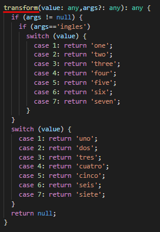
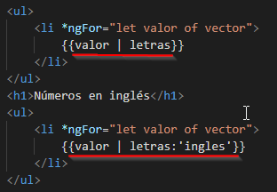
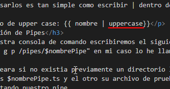
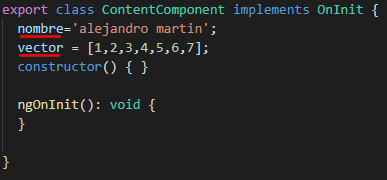

<div class="body container">
    <div class="row">
        <div class="col-md-12 text-center">
            <h1>Pipes: definición</h1>
        </div>
        <div>
            <p>
                Las pipes o tambien llamadas tuberías son funciones de filtrado que se usan en el archivo
                HTML de nuestro componente, cuyo objetivo es transformar un dato a mostrar.
            </p>
            <p>
                Angular trae por defecto una cantidad reducida de pipes las cuales podemos hacer uso de ellas,
                lo mas interesante de las pipes es que podemos crear pipes propias.
            </p>
            <h3>Pipes de Angular:</h3>
            <ul>
                <li>Async</li>
                <li>Decimal</li>
                <li>Json</li>
                <li>Uppercase</li>
                <li>Lowercase</li>
                <li>TitleCase</li>
                <li>Date</li>
            </ul>
            <p>Como usarlos es tan simple como escribir | dentro de las llaves y luego el nombre del pipe en minuscula
            </p>
            <p>Ejemplo de upper case: {{ nombre | uppercase}}</p>
            <h3>Creación de Pipes</h3>
            <p>En nuestra consola de comando escribiremos el siguiente comando "ng generate pipe /pipes/$nombrePipe"
                ó "ng g p /pipes/$nombrePipe" en mi caso lo he llamado letras
            </p>
            <p>Nos creara si no existia previamente un directorio llamado pipes y dentro dos archivos.ts
                uno es $nombrePipe.ts y el otro su archivo de pruebas,además, se modificara el archivo app.module.ts
                importando nuestro pipe
            </p>

            <div class="row">
                <div class="col-md-4">
                    <p class="data-info">Función "transform" situada en el archivo "pipes_letras.ts"</p>
                    
                </div>
                <div class="col-md-4">
                    <div class="row">
                        <p class="data-info">Implementación de los "pipe" en el archivo "content.component.html"</p>
                        
                        
                    </div>
                </div>
                <div class="col-md-4">
                    <p class="data-info">Deficinión de variables predefinidas en el archivo "content.component.ts"</p>
                    
                </div>
            </div>
            <div *ngIf="existIdiomas(); else noIdiomas">
                <div  *ngFor="let idioma of idiomas" class="col-md-6">
                    <h1>Números en {{idioma}}</h1>
                    <ul>
                        <li *ngFor="let valor of vector">
                            {{valor | letras}}
                        </li>
                    </ul>
                </div>
            </div>
            <ng-template #noIdiomas><h3>Inserte idomas</h3></ng-template>
        </div>
    </div>
</div>